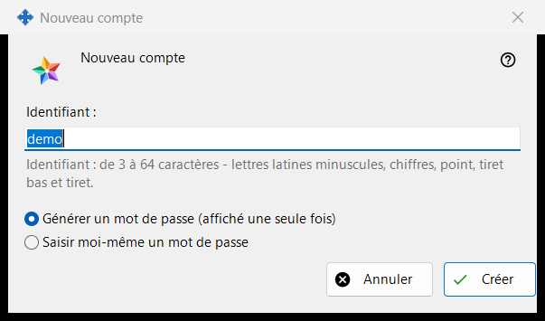
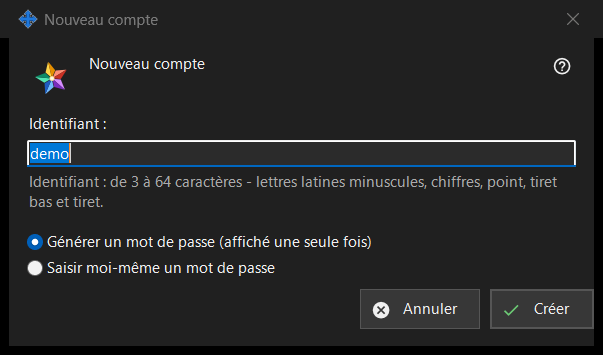

Nouveau compte
Objectif
Une seule fenêtre en deux modes. «Nouveau compte» ajoute un compte au Media Exchange Server que vous exploitez ; «Réinitialiser le mot de passe : <login>» donne un nouveau mot de passe à un compte existant. Ils s'ouvrent depuis «Ajouter un compte..» et «Réinitialiser le mot de passe..» sous la liste des comptes de la page Media Exchange Server des paramètres de Share Manager ; la réinitialisation exige qu'un compte soit sélectionné.


Dans cet ordre
- En mode ajout, saisissez l'identifiant.
- Choisissez comment le mot de passe est créé.
- En mode réinitialisation, décidez si tous les appareils du compte sont déconnectés.
- Cliquez sur «Créer» ou «Réinitialiser».
- Copiez le mot de passe généré depuis la fenêtre suivante, ou saisissez le vôtre.
Les éléments
Déclaration pour le premier compte
Pour tout premier compte, la fenêtre commence par «Avant de créer le premier compte, lisez ce que l'opérateur du serveur peut voir :» et une zone en lecture seule contenant la déclaration. Les comptes suivants et les réinitialisations ne l'affichent pas.
Identifiant
Mode ajout uniquement. De 3 à 64 caractères : lettres latines minuscules, chiffres, point, tiret bas et tiret ; les majuscules sont converties en minuscules. L'indication prend la couleur d'avertissement tant que le texte ne peut pas être un identifiant, et «Créer» n'avance pas avant que le texte en soit un.
Comment le mot de passe est créé
«Générer un mot de passe (affiché une seule fois)» est le choix par défaut : le programme crée un mot de passe aléatoire conforme aux règles, et la fenêtre suivante l'affiche une seule fois. «Saisir moi-même un mot de passe» ouvre la fenêtre «Mot de passe du compte», où une ligne en direct indique ce qui manque : au moins 10 caractères avec une lettre latine majuscule, une minuscule et un chiffre.
Déconnecter tous les appareils
Mode réinitialisation uniquement. «Déconnecter aussi tout de suite tous les appareils de ce compte» est cochée par défaut. La ligne de résultat indique alors que le mot de passe est modifié et que tous les appareils du compte sont déconnectés ; sans la coche, elle indique seulement que le mot de passe est modifié.
Une fois que le serveur accepte
La ligne de résultat indique que le compte est créé. Un mot de passe généré apparaît une seule fois dans sa propre fenêtre avec «Copier le mot de passe» et «Définir mon propre mot de passe..», qui revient à la réinitialisation sur le choix «Saisir moi-même un mot de passe». Avec «Conserver les mots de passe des comptes sur ce PC» activé, le mot de passe est aussi enregistré sur ce PC et le compte reçoit «Afficher le mot de passe..». Si cette version propose les fonctions client de l'échange et que ce PC n'a pas de compte à lui, il est connecté comme premier appareil du compte avec ce mot de passe.
Paramètres du gestionnaire · Paramètres de partage SFTP · Paramètres du serveur d’échange